I'm a software developer studing in Media Creatinon semester that
practices mostly Busness because I'm the scrum master of the team
PatchWork. I also stduy infracstructure for fun. I even have a
server in my room where I host a cloud and gitlab runners inside
docker containers. I'm basically doing everything. My main goal is
to be a 10x developer so it's expected of me to put more effort into
studing everything ICT related.
Main Build
Deska Game
Twitch-integrated tamagotchi-style experience with overlay +
GUI + server communication. Built for fast iteration and live
testing.
First thing we did as a team after choosing a name was making
a suiting logo. The theme was fun but profecional. So what we
did was let Hanna and Malou draw some stuff and the rest gave
them ideas. The final product is:
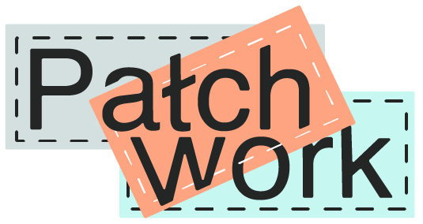
And my contribution for the final product is that I
conceptualized the shapes and their position. On a whiteboard
(I'm more confident in drawing with a marker rather than with
a mouse)
Hanna pointed that it looked interesting and wanted me to send
her a picture of it so she can think more about designing it
home.
Patchwork Website Wireframe
We the Patchwork team decided to make a webpage in order to
display our team a bit better.
To do so we used the diamond method where me, Dylan and
Constantin made a prototype of a webpage in figma. My one is
bellow.
The feedback I got from a coach was that I need to look more
into what other websites have and the feedback from Wouter was
that I need to work more with the artists in the group and
specifically work more with their brand guide.
This is how the final product looks like after the diamond
merge:
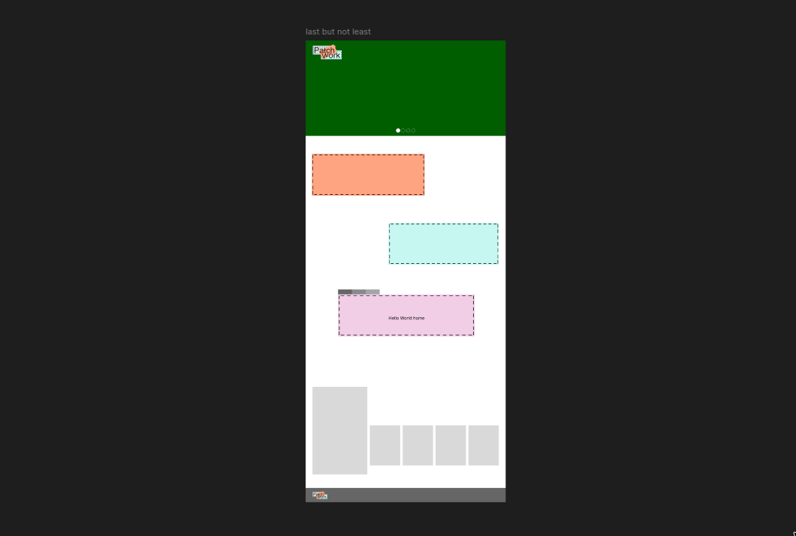
Calsifer GUI Wireframe
Before doing anything we first had to make the concept of the
game idea. We basically sat down and desided to first do
applied research. I did Desca's
current audience.
Then with the outcome we decided to do a tamagothci game and
Dylan used the research and ideas and did a concept document.
You can see it bellow:
In order to give Desca more control over Calsifer we wanted to
make a control panel. We had no idea what to put there or how
it should look like so we decided to use the Diamond Method
where we split and conceptualize something.
The final product has a page inspired by my concept shown
bellow following the main points which are a character on the
left and a control panel on the right.
Link to Figma
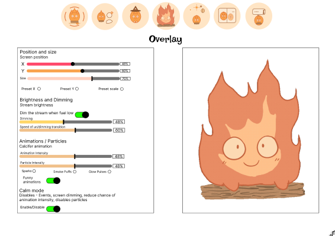
Poster
In order to promote our studio we had to make a poster. Not
juts conseptualize but make. What we decided was that each one
of us will try and make a concept for a poster. Bellow is my
poster:
It doesnt really look pretty mainly because it is the first
thing I came up with but it is a concept. That really didn't
go far. It was just for me to attept to design something
without knowing much. I just did what I felt was ok.
What helpful thing I actually did for that poster is figure
out how the printer in the cration lab works and actually
print it.
Calsifer Twitch Overlay
We as a team got Desca as our client and she wanted a game for
her chat to play while nothing interesting is happening during
her stream. The key points are: to not take away too much of
the stream, to be tailor made for Desca and to be something
related to her beloved Calsifer.
After a lot of brainstorming we came up with tamagothci style
game where Casifer is the chat's pet. We had a meeting and she
liked the idea.
Before doing anything we first had to make the concept of the
game idea. We basically sat down and desided to first do
applied research. I did Desca's
current audience.
Then with the outcome we decided to do a tamagothci game and
Dylan used the research and ideas and did a concept document.
You can see it bellow:
We split up into two teams: the artists and the coders. Later
bacame the artists, the figma maniacs and the coder.
The architechture is the following:
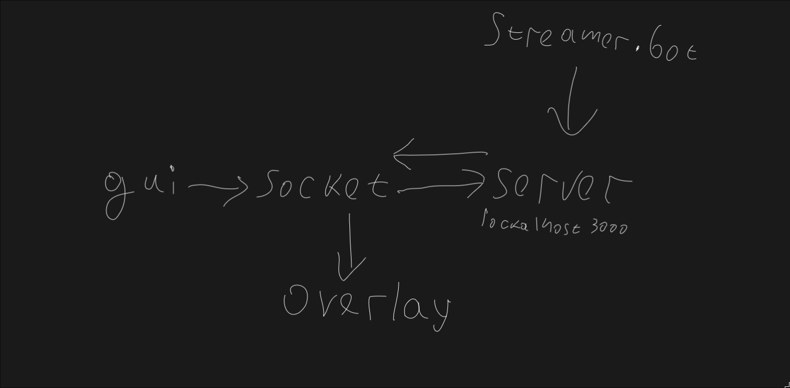
Both the gui and overlay are hosted on a server running on
localhost 3000. In order to start that server Desca will have
to open a terminal inside the folder and type "npm install" to
install all the dependancies once and then each time she wants
to start the game she will have to open a terminal inside the
server folder and type "node server". Then she will have to
put the browser overlay inside obs with url
"http://localhost:3000/overlay/index.html" and to access the
gui she will have to go to
"http://localhost:3000/gui/index.html" inside her own browser.
The server communicates to the gyi and overlay with a socket.
The actuall commands comming from the chat are handled by
streamer.bot where she can connect and modify how the viewer
point redeems are handled. All of this is explained in the
user guide.
The code is split into front and back. The front is on html
and css and the back is in JavaScript.
Bellow is a pciture of the file structure and the files
themselfves.
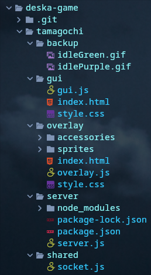
Bellow is a link to the gitlab repository. Link to GitLab
A more interesting design related thing I did is decresse the
struggle of our artists by making it so they don't have to
color each and every idle state to match the changed color by
just rotating the hue of the gif in the code. It dynamically
assigns a diferent color class to the gif and removes it when
it's time is up. Bellow is the code responsible for that:
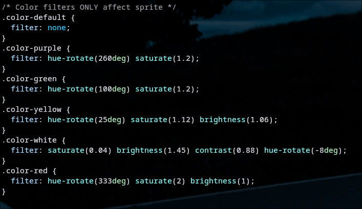
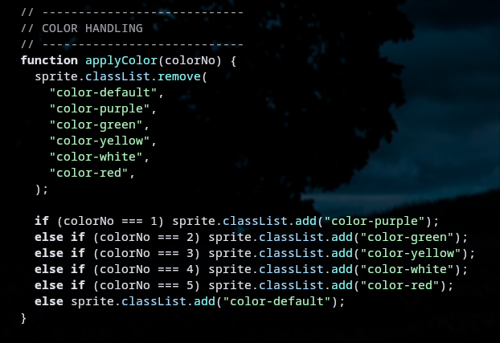
Here is a demo clip from twitch on how it works. I don't have
an account that has viewer point shop and it is not possible
to use Desca's account because her giving it to us might
expose personal information. Because of that I'm skipping a
step and directly parsing commands to the server.
There still are some bugs but I lack the time to fix them so
this is what I have so far. I also am not displaying all the
color changes and the cosmetics because that would take too
much time.
We had a meeting with Desca to demo her the game and she
really liked it. She said it looks really interactive.
Transcript for the meeting can be found in LO 4 section.
Portfolio Website
In order to show my development process in this semester I had
to make this portfolio website.
My first idea was to make a simple pdf file where I can show
all my stuff and program it in typst so I can learn typst but
after a talk with Wouter it got apperant that I might want to
take inspiration from other software engeneers and make
something thematic. Bellow is a picture of feedpuse prooving
conversation with Wouter.
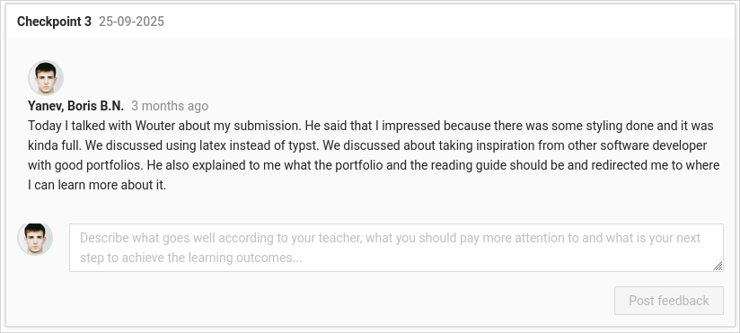
Because of that talk I looked around and decided to make a
webpage and design it to look more digital, more like a
software project with a file tree on the left and a viewer in
the middle. I took inspiration from my own NeoVim
customisation set up:
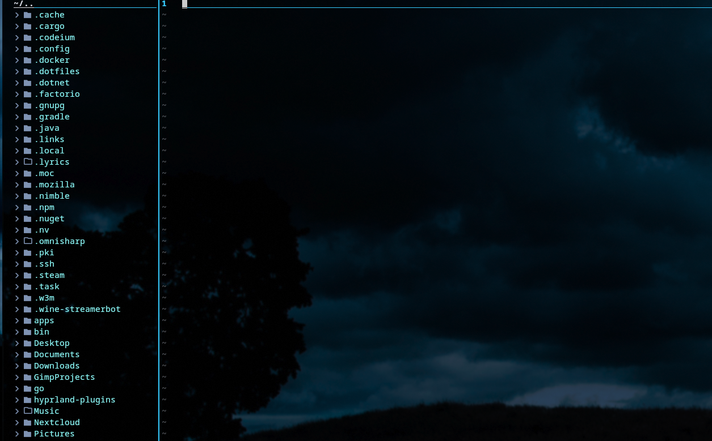
I wanted to make the page also reflect me as a person. I am a
software engeneer so the digital vibe is unevitable. I also am
a big fan of nature and more specifically clouds. I love
looking at clouds. Becasue of that I desided to put an image
of a cloudy sky as a background but also make it transparent
and on top of a teal color giving it more of a digital vibe
mixing both nature and coding. Also becasue I didn't want to
make it look so static I decided to add a gradient wave going
from side to side switching the colors from teal and black.
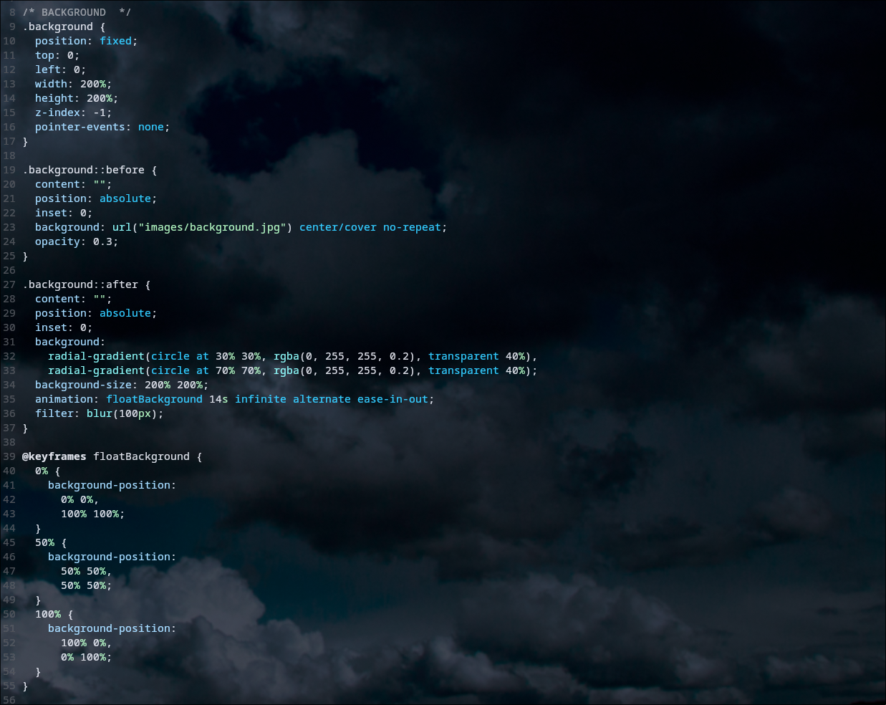
Later I added the Projects tab where If you click on "View
evidence in LOs" it will send you in the LOs tab with the
things that I did for that project hightlighted making it more
interactive.
I also added a bunch of more animations that you have probably
saw already.
Bellow is a link to the GitHub repository. Link to GitHub
It's on GitHub because it has a feature where I can set it up
to automatically deploy on GitHub Pages on every push which is
very convinient.
Jan validated it by saing it looks interesting. Crish and Dirk
said that I should make it a stronger point in proving my
learning outcomes.
Here is how it looks like:
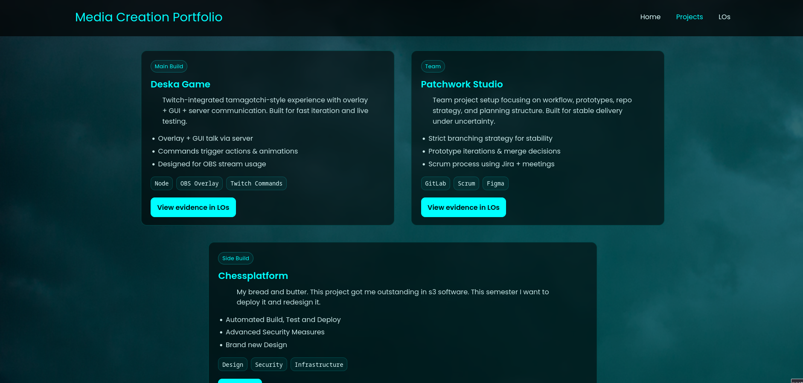
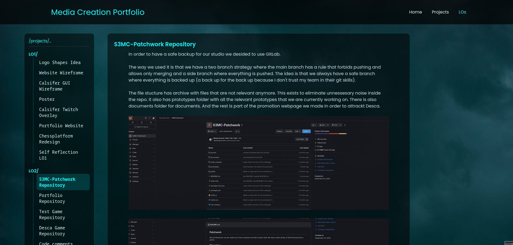
Chessplatform Redesign
Chessplatform is a chess related social media website which
was my personal project in semester 3 software. Because I'm
not so proud of the front-end and also I want to prove this LO
I decided to do a redesign project.
In order to validate it my friend Troyan who played chess
profecionally in highschool and fits the tageted audience will
act as my client. In order to validate it my friend Troyan who
played chess profecionally in highschool and fits the tageted
audience will act as my client.
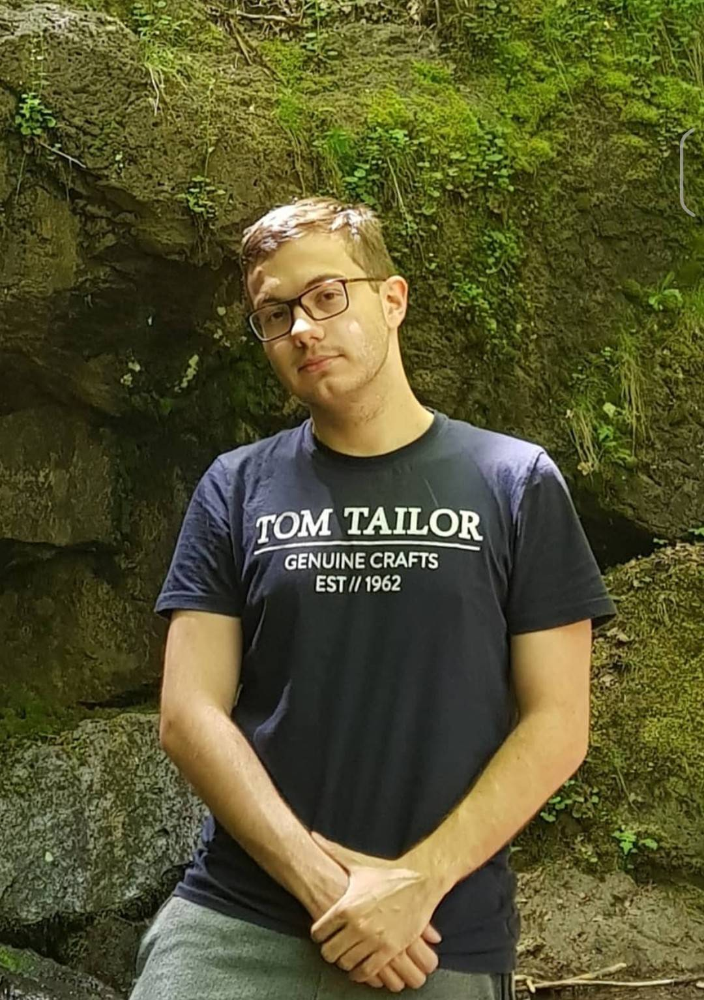
For this project I will be following the
Design Thinking
methodology.
Stage 2 is Define - State Users' Needs and Problems.
Here
is a document I did on that topic.
Stage 3 is Ideate - Challenge Assumptions and Create Ideas.
Following the instructions from the methodology I came up with
this document.
These documents were created after a meeting with Troyan.
Inside them there are quotes from the meeting but I forgot to
record a transcript from it. I will remember to do it next
time.
After all this I made a concept document explaining the
concept behind the webpage. First I need to convince him if
the website itself is a good idea. The website curretly has
log in, register, articles for users, live streams for users.
Bellow is the concept document:
I had a meeting with Troyan where I showed him the concept
document. The outcome was that he liked the idea and confirmed
everything from the research to be true. Bellow is a summary
of the talk.
Afterwards is Stage 4 Prototype - Start to Create Solutions.
Bellow the prototype done in Figma.
Self Reflection
Self Assessment: Proficient
I would say proficient because I believe I learned a lot in
this semester about conceptualizing, designing and developing
an interactive media producst. I would say that I may lack in
designing but I trived in making interactive media products.
In fact I would say I made the most in the group for actually
producing the interactive game since it's coded entirely by
me, I found out how to connect Desca's viewer point chat to
the game, I connected all the sprites given to me, I made the
functions where the idle gifs stay a sertain color by rotating
the hue. I basically coded all the functionalities with the
limited amount of gifs and help given to me. The plan was
after fully designing the gui Dylan and Constantin would help
me but it took them an unreasonable amount of time to finish
it so I was kinda left alone.
My main point in this semester was to learn Figma because with
Figma I can finish prototyping an idea way faster in figma
that in code. In that matter I can say that now I'm confident
that I can use Figma for conceptualizing and I will continue
using it in the future project that require me to build a
front end. I found out I can also export code from Figma which
only motivated me more to learn it.
S3MC-Patchwork Repository
In order to have a safe backup for our studio we desided to
use GitLab.
The way we used it is that we have a two branch strategy where
the main branch has a rule that forbids pushing and allows
only merging and a side branch where everything is pushed. The
idea is that we always have a safe branch where everything is
backed up (a back up for the back up because I don't trust my
team in their git skills).
The file stucture has archive with files that are not relevant
anymore. This exists to eliminate unnessesary noise inside the
repo. It also has prototypes folder with all the relevant
prototypes that we are currently working on. There is also
documents folder for documents. And the rest is part of the
promotion webpage we made in order to attrackt Desca.
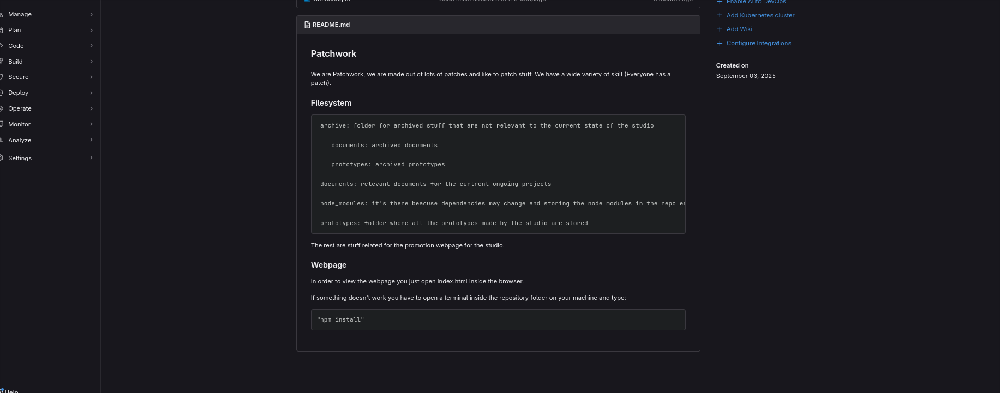
This is done because the people after us now can clone the
repostory easily (if fontys transfer the repository to the
actuall GitLab and not their own one) and have access to all
documents and prototypes.
One of Chris and Dirk's feedback was that there is no README
which as you can see in the pictures there is now explaining
the file system and fix to a potential bug for the people that
are to take the project after us. Bellow is a link to the
repository.
In order to have a reliable backup for my portfolio and a way
to sync the project on both my home gaming laptop and school
dedicated thinkpad I decided to use GitLab.
This repository has a pipeline that mirrors the repo to
another repo in GitHub where is automatically deploys on
GitHub pages which has made my work more easy. The runner that
runs the pipeline is hosted on my home server. Bellow are
pictures of the two repositorues and the pipeline:
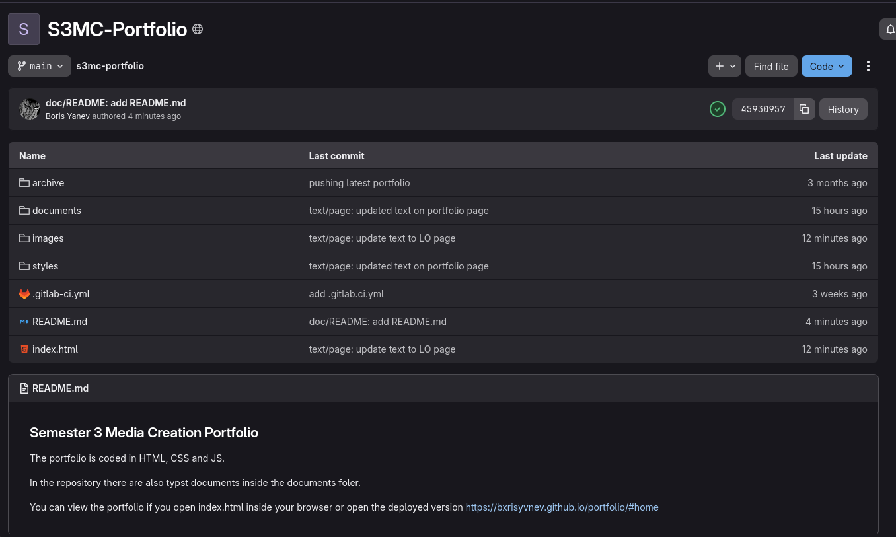
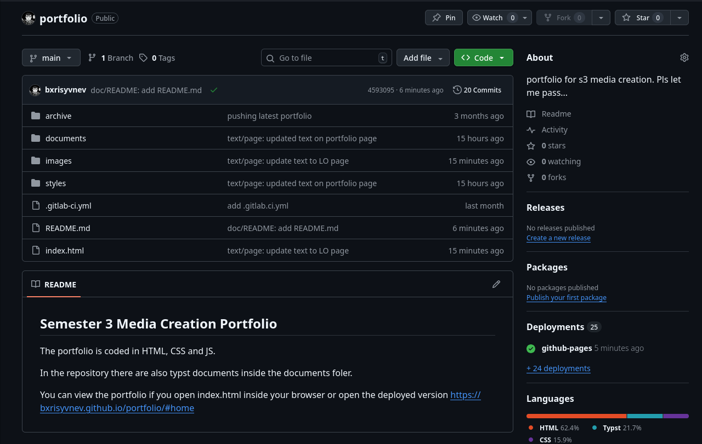
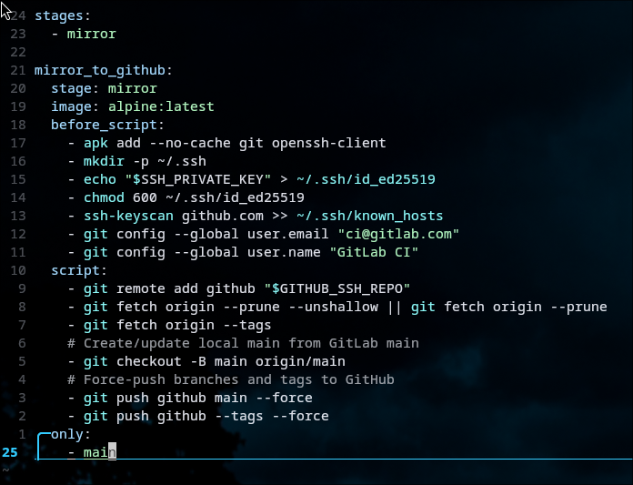
The feedback from Dirk and Chris was that I have no README
which I have added recently so future developers can get the
idea behind the project more easily.
Another part of their feedback was that my commit messages are
not following any framework which I have done an applied
research and improved. This way people that have cloned my
repository now can understand more easily what I have done on
each commit. Bellow is a picture of how my commit messages
look like and how they used to look like:
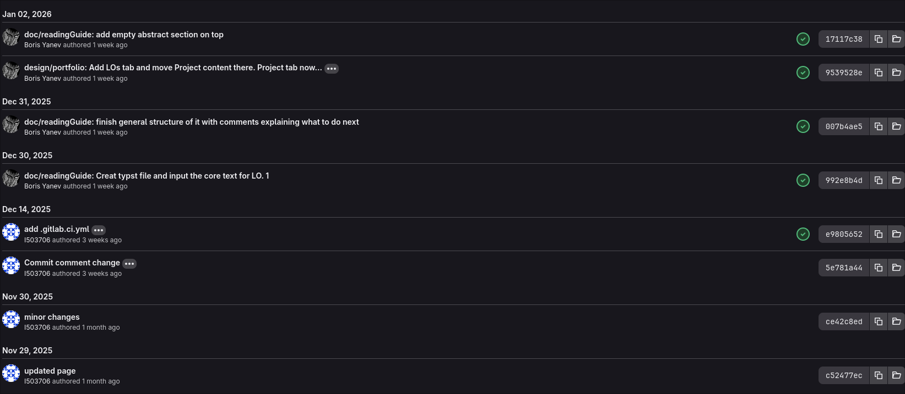
Bellow are links to both GitLab and GitHub repositories:
In order to learn the fundamentals of making a twitch
interated game I made a repository where I can store my test
game. This is only here to show that I am consistent with my
git usage.
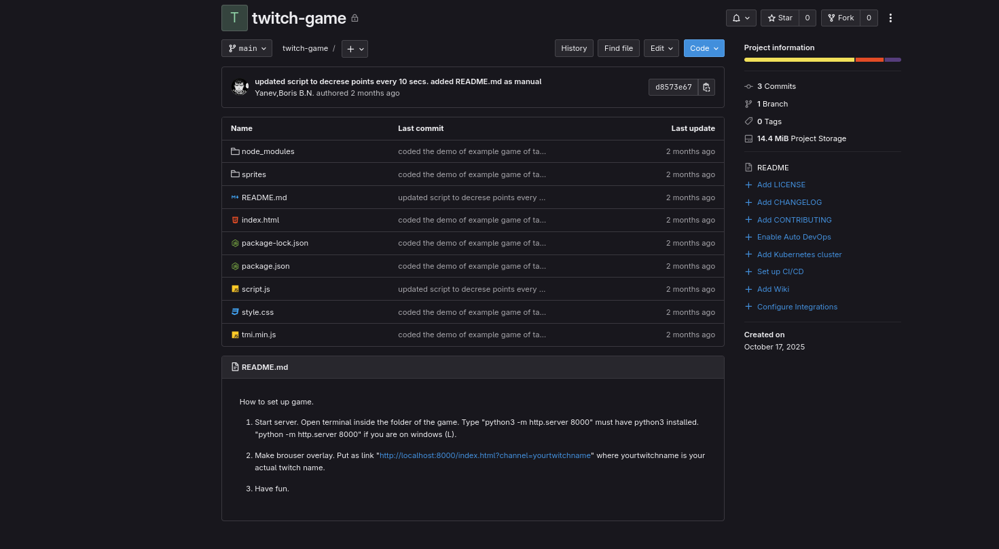
There is also a README.md exlaining how to set up the test
game. Link to GitLab
Desca Game Repository
In order to ensure a safe backup we decided to use GitLab. In
this repository we use two branch stategy where the main
branch is protected against pushing (only merge is allowed)
because I don't trust my team's git skills.
The repository has a very detailed README.md that explains the
order of which you have to read the documentation. The
repository also contains a very detaled user manual and
technical manual. There are explained vulnarabilities that
must be patched like the security which curretly is
non-existent. In the diagrams folder there are also c4
diagrams for more detailes. Bellow is a picture of the
repository with the README:
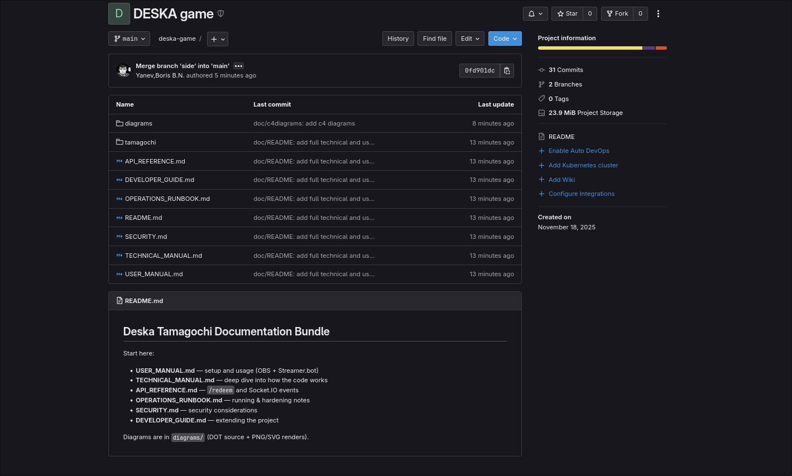
Bellow is a link to the repository if you wish to read all the
guides and view all the diagrams.
Overall I believe that whoever takes up to finish the project
would have a very easy time learning whats going on in the
code and be able to expand it.
Code Comments
One of Chris and Dirk's feedbacks was that I have to leave
proper comments inside my code to make it more easy to read. I
tried to leave detailed comments over my code to explain what
certain blocks do. Bellow are such examples:
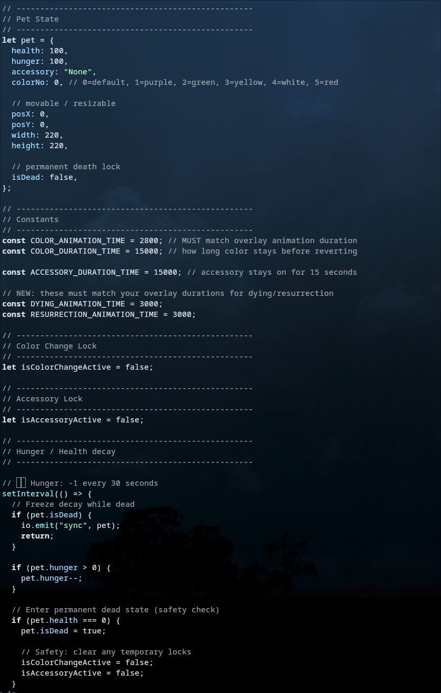
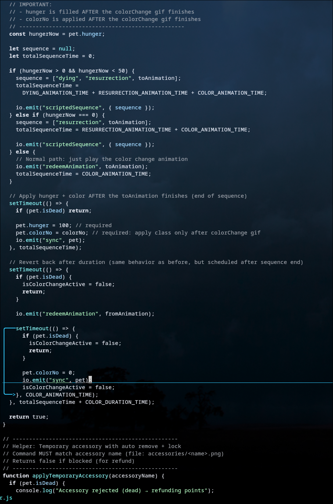
This code is taken from the Desca Game Repository and there is
a link to the repo on the coresponding tab if you wish to
check the all the comments.
User Manual
In order to make it more easy for Desca to use our product I
made a user manual. It's mentioned in the README.md in the
game repository. Bellow is a link to the said User Manual:
In there it is mentioned that there is no security and she
should be careful on how she uses it.
Technical Manual
In order for us to be able to transfer our product to other
developers I made a technical manual which consists of:
TECHNICAL_MANUAL.md, API_REFERENCE.md, OPERATIONS_RUNBOOK.md,
SECURITY.md, DEVELIPER_GUIDE.md and a bunch of c4 diagrams.
The order of reading is explained in the README.md inside the
game repository. Bellow are links to each and every guide if
you wish to check them out:
In SECURITY.md it is explained how they can fix the security
issues if they wish to host the game on a server.
Webpage Figma
For developing the Patchwork webpage we used Figma where all
the iterations, diferent designs and failed ideas are stored.
Me, Dylan and Constantin have separate pages with our own work
and then there is 2nd version / honed version and Finalized.
Later Malou joined and made her own version. Bellow is a
picture of the Figma:
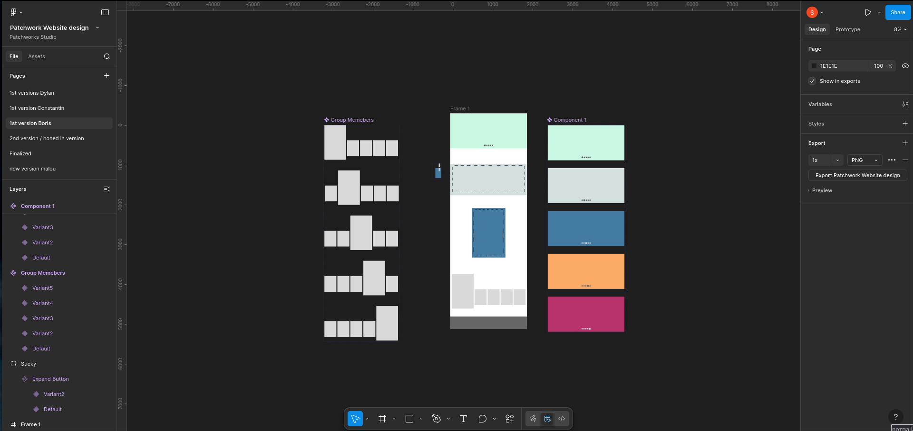
This Figma can be used with the brand guide to get an idea
what our brand and theme is about. Link to Figma
GUI Overlay Figma
For developing the GUI for Desca's game we used Figma. There
is a separate page for me, Dylan and Constantin in it. In
there you can find all of our different iterations, designs
and failed ideas. Bellow is a picture of my page.
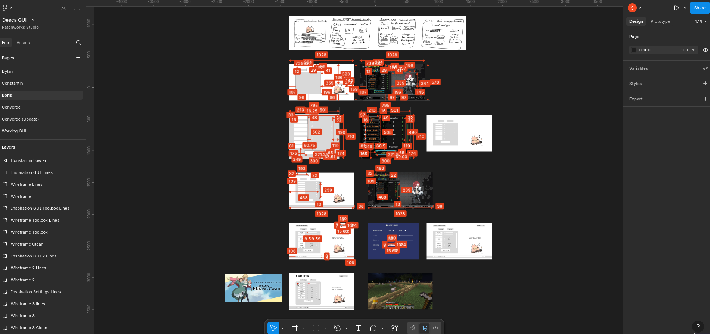
The figma can be used with the brand guide to get a better
idea of what our idea for the gui design was for future
developers. It can also be used as a wireframe in order to
actually code it since we did not have enough time for that.
Link to Figma
Discord
For comunication, planning and assets sharing we used Discord
because we all have used it for a very long time and are
constantly online there. Bellow is a picture of it.
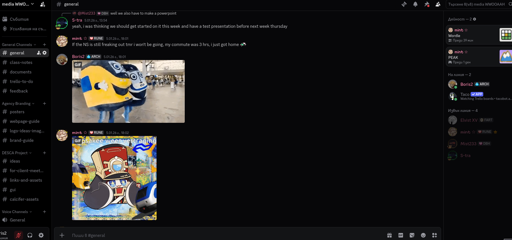
Self Reflection LO2
Self Assessment: Proficient
This is something I am good at. I have been using git for
almost everything for a while so it makes sence why I managed
all the repositores.
This semester for the first time I made User Manual and
Technical Manual so this is a plus for me because I learned
valuable stuff which is why I believe I should have proficient
in this learning outcome.
I belive that if any developer grabs our project to extend it,
they would have a very easy time learning how the code works
because of all the work I did on preparing the md files inside
Desca's game repository.
Although Desca's game repository looks good I would say I
could'd have done better with the rest of the repositories
because you might have noticed that the rest of the README.mds
didn't look as good which is something I can still work on in
my opinion.
Webpage Wireframe
This is the process for creating my version of the studio
webpage. This is my first attempt of using Figma this semester
so this first iteration was more of an experiment where I try
different things.
First I "stole" an idea from Dylan with the sliding images on
top and put a bunch of text boxes and a picture of our failed
mascot. What I came up with that is more interesting was the
members' pictures that will pop up if you hover your mouse on
top of a picture. Here is a picture of my first iteration.
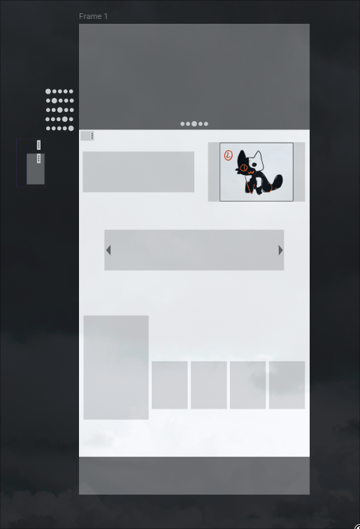
I had some feedback from teachers where they said I should try
and observe other websites first because it is not very wise
to try and do "new" stuff because I'm not experienced enough
and that I should follow the brand guide more.
The next iteration I put some colors taken from the brand
guide and decided to look at some webpages. The one that I
liked the most was
Dreamworks studio's
webpage. I copied how some of the text boxes were spread to
the enire screen width and some were only a small portion of
the screen width. I also did some prototyping. Bellow is the
second iteration and feedpulse from talk.
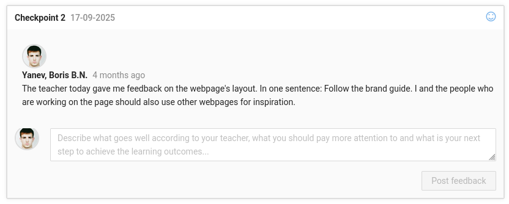
I didn't really do a lot of iteration or took much feedback
but thats mainly because I was not used to working with Figma
and took me way more time to create anything compared to my
peers and time was pushing me.
Afterwards we had to compare work with my team and say what we
like about each others work. They liked my idea for the group
members separate pictures. Then Dylan did the diamond merge
and created a honed in version. Bellow is how it looks like:
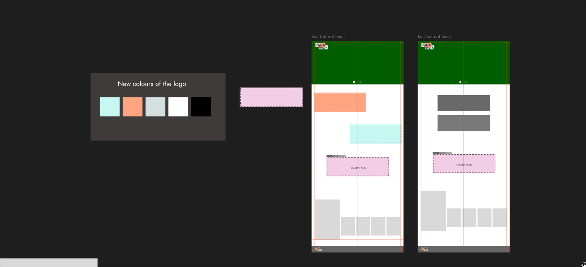
After some brand giude development and bunch of discussions
and teacher feedback we came up with a finalized version. It
is shown bellow:
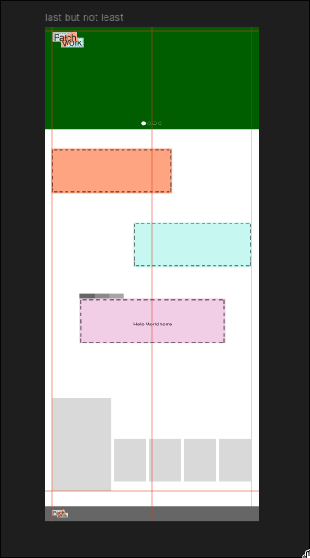
Afterwards it came to coding the webpage. Because I'm the
"coding guy" I took the lead in splitting and planning the
tasks:
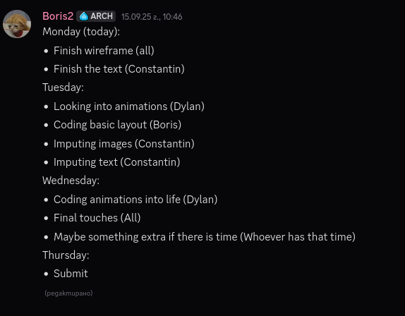
While I was coding my part I did some mistakes that I ended up
liking a lot so I kept them. One of these mistakes was the
first text box clipping with the sliding top images:
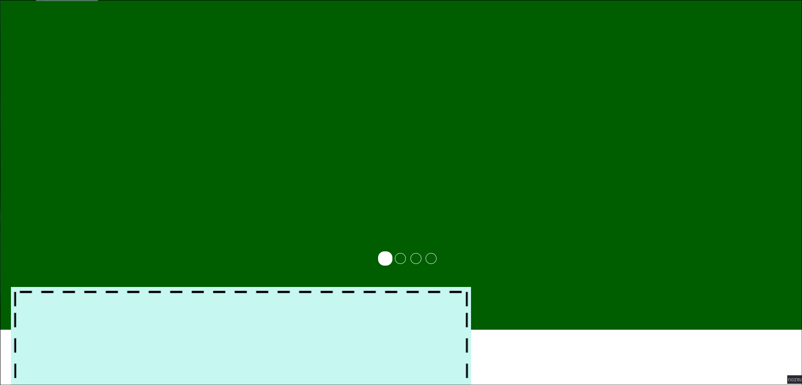
The coding process was the following. I used an AI that would
automatically code the page with the given Figma url. It
produced a bad result but it also saved a lot of time because
what I only had to do is fix a small amount of stuff. And also
provided a solid basis where we can all start coding (me,
Dylan and Constantin).
I split the project into branches and explained to my team
what to touch and what not to touch in order to not create a
merge conflict around 50 damn times. All they had to do is
code in the designated containers but since their way of
thinking was so far away of mine they couldn't comprehent how
to code the text box animations wiouth touching the layout
which I was working on simutaniously. At one point I had to
delete Dylan's branch to avoid merge conflict. This experience
really taught me how to keep my cool. They of cource ended up
changing the entire layout and I crashed out and deleted my
branch and left them work on one computer and merged only
their changes. Because they did not respect my work and coded
their layout (on one computer) it took them way more time than
anticipated so the project failed and we did not finish the
webpage on time...
Overall I believe it was my fault not splitting the code in
completely separate files and locking away the files that were
not ment to be touched. Or maybe I had to bite the bullet and
deal with all the merge conflicts instead of trying to prevent
them. Bellow are links to figma and git repository.
Hanna made a lot of good looking logos but the one that
sticked after all her iterattions had a not so good looking
font. Because of that she asked me if I can try and add some
fonts so she can gain more inspiration.
The theme was fun but profecional so I tried following this
rule with the fonts bellow.
Since the colors were fun enough I tried with a very
profecional newspaper style font FreeSerif Regular. Bellow is
how it looks like:
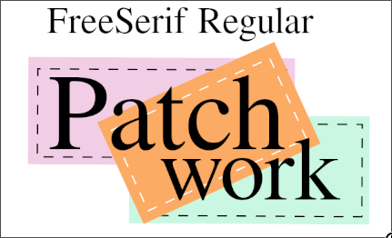
This felt a little bit too heavy on the profecional part so I
tried a more interesting font called Font awesome 7 brands
regular. I tried both normal and bold. It didn't really feel
right but here are how they look:
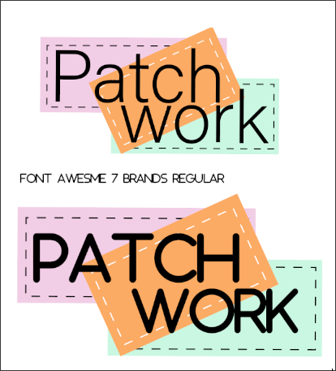
That felt way too fun and ruined the balance so I stick with
the previous font but decided to add a small word play making
the "k" in the word "work" bigger because there was free space
on the rectangle which caused it to look too empty. This is my
personal favorite and here is how it looks like.
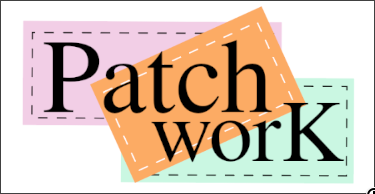
The feedback from my group is that they like the big "k".
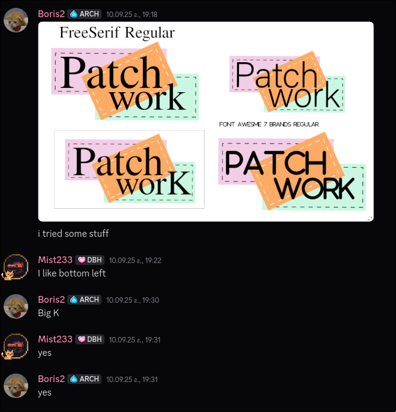
I showed these logos to Paul and Wouter. Wouter liked the
Serif font and the big k because it was breaking a rule and he
liked that. Paul liked the other font and hated the big k
because it was breaking a rule. Their overall feedback was
that we have to take inspiration from other logos and play
with the letters a bit more.
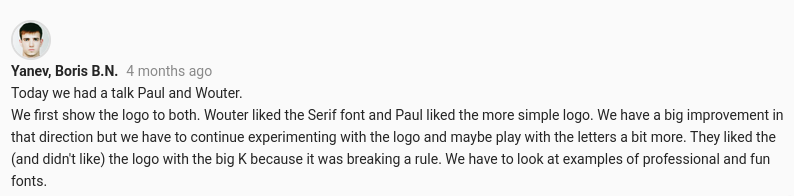
That was my main contribution to the final logo. The rest of
my contribution is me just giving feedback on what I like and
what I don't like from an outside position. Bellow is the
final iteration of the logo.
Game GUI
Because we wanted to make it easy for Desca to controll
Calsifer we decided to make a GUI.
Me, Constantin and Dylan used the diamond method and did it in
FIgma. I asked to use Figma because I wanted to practice it
more since it is what I wanted to lean the most this semester.
Constantin did the low fidelity that was liked by Dylan but I
didn't really like how many tabs there were and how spread out
everything was. So I wanted to make a simpler GUI where
everything is closer together and a preview of Calsifer is
also there. My reasoning was that because Desca was going to
be straming she would spend too much time searching for
specific things to change on Cal. where she might end up
giving the GUI more attention than the strean itself. This
would also reduce tiredness cause by search fatigue. I made a
applied research document explaining why reducing search
fatigue is important. You can fing it
here.
I tried looking online and found a GUI that was a really close
mathc to what I wanted and tried copying the layout. Since I
have no idea how to position stuff I decided to copy
completely the control panel and character's position.
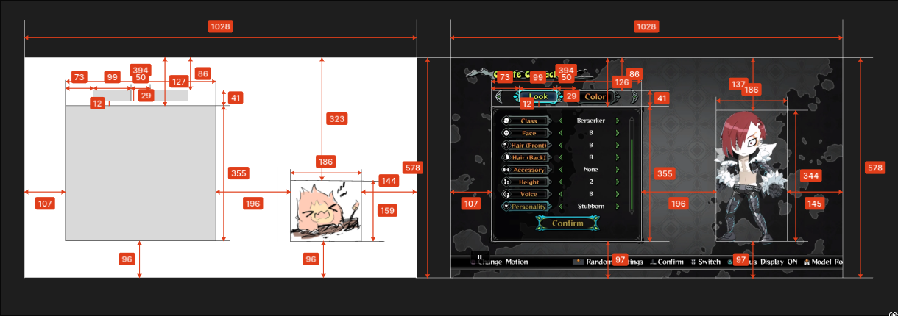
I learned how to use the measurment tool in order to make a
complete cope so it doesn't seem off.
Then I did the same for the control panel because I really
liked the layout of the inspiration I found.
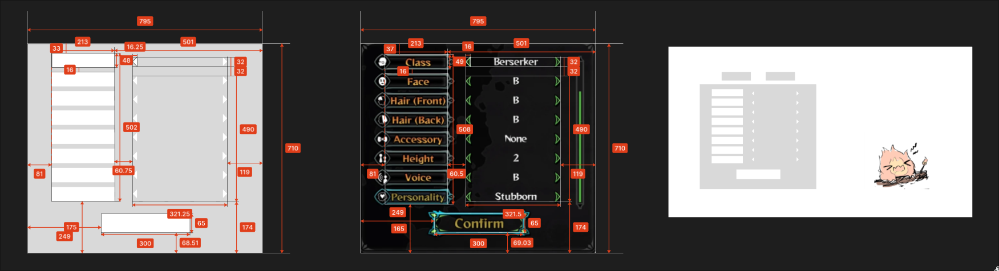
After that I felt that the space was a bit too empty so I
added some more stuff. The "Create Character" textbox was
copied but I instead decided to name is "Calsifer
Configuration". I copied the footer but instead of using it as
info box I wanted to use it as a textbox where Desca can add
text to Calsifer. I also copied the scroll in the controll
panel but because I needed a way to display how much HP Cal.
has curretly I decided to use it as HP bar.
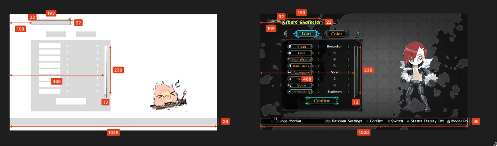
Next my team told me that now the space above Cal. looks
empty. This isn't the case for the inpiration GUI becaise of
the backgorund textures and that the character is taller. For
that I decided to add a language dropbox on the position where
you would usually find one. I copied one from an online
picture I found. I also added text above Cal. so that space
isn't so empty. Then I filled out the text and switched to
swipe bars on the health and hunger sections since it's gonna
make adjusting that easier.
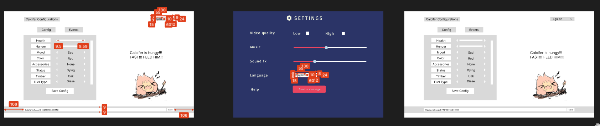
I got feedback from Wouter that was that maybe I can do more
styling to the buttons and have an interesting background. He
also pointed that I did not do a low fidelity sketch which I
will try and do next time.
I tried doing some styling myself where I added shadows to the
things that are ment to be pressable, some colors and icons to
the health and hunger swipe bars. I wanted to make it easy to
recognise the health and hunger and there doesn't exist a
better solution than adding the minecraft icons and colors. I
also changed the title to Calsifer following the "How's Moving
Castle" font.
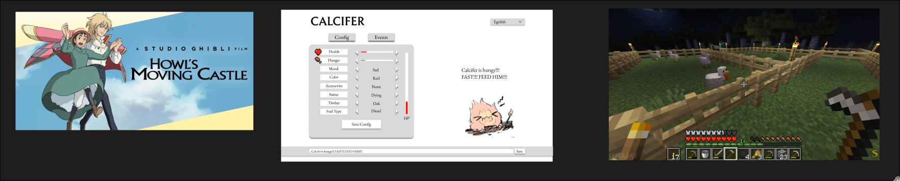
After we had a meeting with Desca on feedback. She completely
ignored the functionable and being easy on her part and went
for the prettier more chaotic design that Constantin made. I
don't really blame her, my design wasn't really ment to be
pretty.
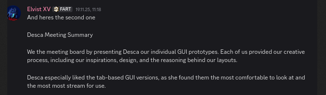
Afterwards Dylan and Constantin continued working on the
design while I started coding. The original plan was that I
would start coding and then they would join me but for
whatever reason they finished the Figma work about a month
late and did no code work. The final GUI is not coded.
I entirely blame myself for this because I was the scrum
master and was not hard enough on them. The reason is that
forgot about the scrum workflow and being the scrum master
because I got scared from Dirk and Chris' feedback and started
working more individually. Key point is that I should have
stayed more consistent with giving out tasks and managing the
team.
Bellow is a link to the Figma used where you can find the
entire work process and the final version of the GUI.
This is something I am good at. I have been using git for
almost everything for a while so it makes sence why I managed
all the repositores.
This semester for the first time I made User Manual and
Technical Manual so this is a plus for me because I learned
valuable stuff which is why I believe I should have proficient
in this learning outcome.
I belive that if any developer grabs our project to extend it,
they would have a very easy time learning how the code works
because of all the work I did on preparing the md files inside
Desca's game repository.
Although Desca's game repository looks good I would say I
could'd have done better with the rest of the repositories
because you might have noticed that the rest of the README.mds
didn't look as good which is something I can still work on in
my opinion.
Self Reflection LO3
Self Assessment: Proficient
I would grade myself with proficient because I thing I
developed a lot in terms of explaining and documenting what I
did in detailed iterations.
Although it may not seem a lot compared to others it must be
noted that I started with basically zero understanding of this
and me developing this much should mean a lot to the grading
system of Fontys.
What I would have liked to do better is take more feedback
from peers and teachers between my iterations and go through
more feedbackloop.
Desca Current Audience Research
In order to lean what Desca's current audience is like I
conducted a research document using the ICT DOT methodology.
Finding out what her audience is right now will help us design
a game siutable for them since they are the end user and not
Desca herself. Bellow is the research document.
How to write Commit Messages
Based on feedback I got from Chris and Dirk it became apperant
I don't know how to write commit messages. So I decided to
conduct a research using the ICT DOT research methodology to
lean. After which I decided to also teach my teammates this
information by doint a little workshop. Bellow is the research
document.
Search Fatigue Research
In order to learn what search fatigue is I conducted a applied
research using the ICT DOT methodology. Bellow is the research
document.
Chess Players User Research
In order to get a better idea of the targeted audience for
Chessplatform I had to do a User Research on Chess Players'
Needs and Motivations.
This research document followed the framework prvided by the
Design Thinking.
Defining Chess Players' Problems
In order to get a better idea of what probels the targeted
audience faces I followed the contents of
Design Thinking
site. I made a document explaining it better:
Generating Ideas for Chessplatform
In order to get better ideas for the site I followed the
instructions in
Design Thinking. I made a document explaining it better:
Meeting with Desca
In order to validate our work we had a bunch of meetings with
our client Desca. We had made a discord server with Desca and
the other group we worked with and used it to schedule
meetings with her. Bellow is a picture of the discord.
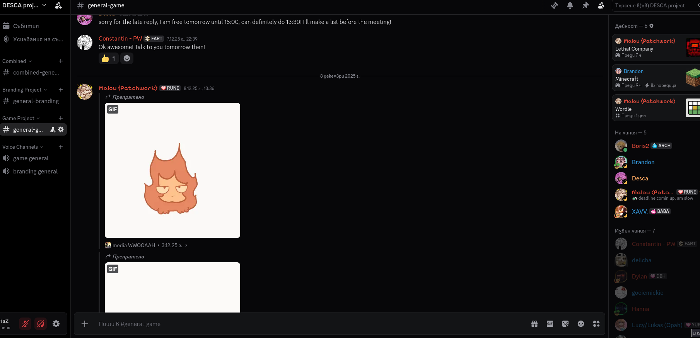
We tried to orginise a meeting with her once every two weeks
after each sprint so we can get feedback on what we have done
for the sprint and plan what we are going to do next. Bellow
are transcripts of these meetings:
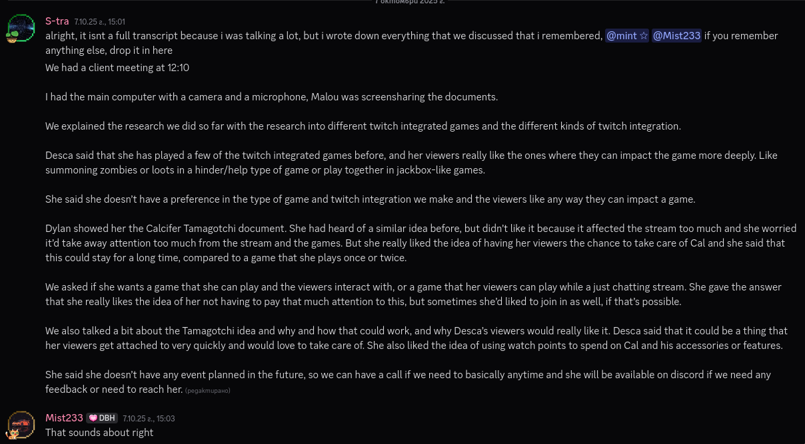
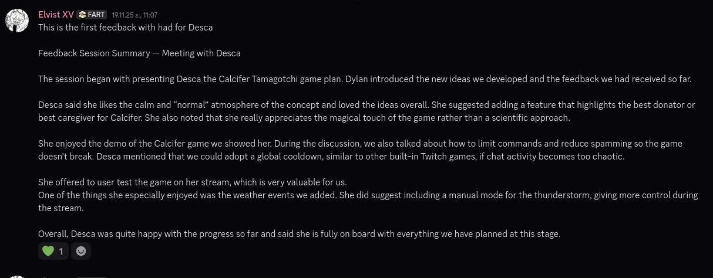
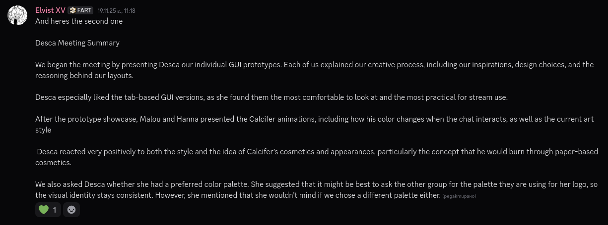
Unfortunatelly we forgot to write one from the last meeting
which was right before the holidays. What happend on it was
that I showed a very barebones version of the game with only
some color changing animations. There were some ideas from
Dylan talked about and Hanna and Malou showed their work.
Meeting with Coaches
In order to get an idea of what to do I had some talks with
teaches. I mainly talked with Wouter and Jan since they are my
assessors. I feel like I did not talk enough and did not get
enough feedback this semester but I tried my best to keep
myself informed about my progress. For scrum master related
topics I talked with Wouter a lot since he has experience in
team leadership.
Another issue I have is that I did not reflect all meetings in
the feedpulse. Thats mainly because I was more focused on
learning stuff rather than writing feedpulse which is why I
don't really have enough checkpoints. Also the word feedpulse
was not mentioned a lot this semester for whatever reason.
Here are some pictures of the the more important feedpulses I
got:
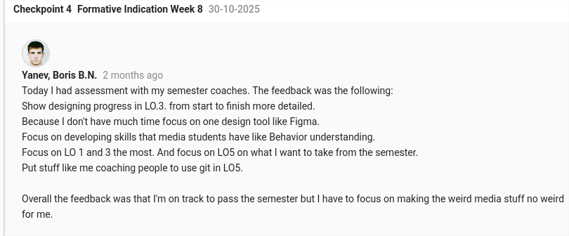
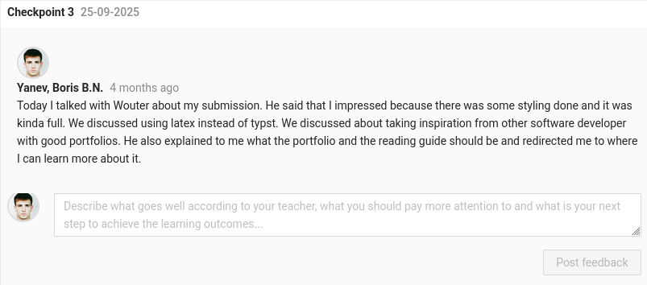
The feedback I followed the most was the one I recieved on my
grades. The most meaningful feedback I got was from Dirk and
Chris who gave me a lot of critics and really explained what I
did wrong so I really tried focusing on that. Here is a
pciture of their feedback:
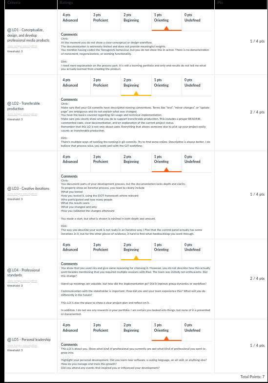
Meeting with Chess Player
Jira Board
In order to have a efficient workflow we decided to use the
Agile Scrum framework becuase it matched our unpredictable
client Desca (she had a period where she basically
disappeared). Since my team was close to entering the
profecional world of ICT where Jira is the main planning tool
I decided it was best for them to use Jira. They were used to
using Trello so they weren't very entusiastic about it.
We did a weel of fortune where we decided who was going to be
the scrum master and project owner. Malou got the project
owner role and I got scrum master.
First I made a Jira board and added everyone to it and started
making tasks. Because it is my first time being a scrum master
I did't really know how to organise stuff but I got some help
from Paul where he explained that tasks must be smaller. For
expample the task should not be named "Finish poster" but it
should be split into: "research poster definition", "gain
inspiration", "conceptualize", etc. The tasks have to be split
like that and they should be updated all the time so I can
know what everyone is doing at the time. In order to plan the
tasks I have to also communicate a lot with my team so I can
gain an idea what the general process is like. Also I have to
use epics. Here is a picture of the Jira board and backlog:
This helped me and the team keep track of the tasks that we
had to do and in what time we had to finish them.
After another talk with a coach (I'm ashamed that I forgot
with who it was but I think it was with Paul again) I realised
that I have no defenition of done written under each task.
This is necessary everyone to know what the final product of
the task should be. Since I'm not that experienced in
designing I left my team write their own definition of done
under their tasks with me only reviewing it. Here is an
example:
This helped me and the team remember what the actual goal of
the tasks was and helped reduce the developement of
unnecessary time consuming features.
I did not write deadline dates under each task because I felt
like the sprint's deadline date was enough but after some
issues I realised I made a mistake. Dylan and Constantin spend
way too much time on their part of the GUI task that it left
no time for actually coding it which it is entirelly my fault
for not forcing a deadline.
After a talk with Dirk me and my team also realised that we
have not been doing proper stand up meetings. We did not have
a daily schedule for them and because of it I was not keeping
track of the team's progress properly. To battle it we agreed
to have them every work day at 9:30 and to not forget it we
also set a discord notification that triggers on that time.
Here is a picture of that:
This helped me and the team speed up the progress a lot.
Because now there was the fear of syaing "I did't do anything
yesterday" on a stand up meeting everyone was motivated to
work and complete their tasks.
After the grading from Dirk and Chris I got really scared and
completely forgot about the jira and the scrum master thing
and started working more individually on my grades rather on
my group. After that point issues only increased:
- I had to work on coding the game.
- I had to work on research documents.
- I had to work on a separate individual projects that had
nothing to do with this semester. They were entirely to help
me find an internship.
- I had to look for internship.
- I had to go to work so I don't end up starving.
- On top of everything I had to work hard on finding ways to
improve my grades.
Because of all this I forgot about the Jira board and because
of it the project development slowed down significatly. This
also had a huge influence over my resting time. Some nights I
did not sleep at all and only worked and had to go to school
like that. Most nights I slept for around 2 hours and most
morings I would give up on going to school. This casued mental
issues and most importantly I couldn't get enough feedback
from teachers. Even tho I wasn't that present I made my best
to communicate with my team on what I need to finish coding
the game.
Overall I believe I learned a lot on how to be a scrum master
and next time I have to act as one I will be more confident on
what to do.
After all the effort put into the group project it came time
to actually present it.
We started making the presentation a week before the date and
started planning what to do when we are giving it. The
presentation is made in Canva. Bellow is a link where you can
see the slides better. Link to Canva
We had a goal to make the presentation really interactive with
the audience. Hanna came up with the idea to print stickers
and I came with the idea to ask the audience questions.
We had no script. Everything said was improvised on the spot.
We did some test presentations in the R10 quite rooms where
the goal is to figure what points of the project to talk about
rather than what to say word for word. This made the final
presentation feel more natural.
Since I had the most experience doing these kinds of
presentations I felt the least nervous of our team.
My part of the presentation was to show the demo since I coded
it an knew what was going on the most. I had to teach Hanna
how to control it with putting in the commands and using the
control panel so I could only talk and not bother with
controlls.
What made my part interactive was that I had the idea to ask
the audience the question "which metal turns the flame
purple". Unfortunately figured on the spot most people didn't
have a mandatory chemistry class in high school so no one
knew. The idea was that if they said magnesium which is
incorect to test it and see how the flame turns white and say
"you were incorect, any other guesses". Unfortunatrly I had to
skip it and made up a scenario with the rain feature on the
spot. On this part there was a bit of a technical difficulty
where Hanna messed up the command that had to put the umbrella
on Calsifer to save him from the rain and to not make it
awkward I made some jokes that Cal. is already dead. After
that I did the transition to Dylan and Constantin and that
concludes my part of the talking.
On the questions part I tried to make it fun with giving out
the stickers to the people that ask questions so it can
motivate more people to ask.
Bellow is a video of the entire presentation filmed by a
memeber from Ducks on Fire called Gabriel. Because the video
is hidden and can't be previewed here you have to click and
the "Whatch video on YouTube" in order to watch it.
Overall it was a fun experience. After the presentation we had
some drinks and I talked with Desca and told her that if she
wants to finalise the project I can continue working on it. I
gave her my contact information and she said that she will for
sure contact me.
Self Reflection LO4
Self Assessment: Proficient
Eventho I had some pitfalls I believe I learned the most about
Scrum and being a Scrum master in this semester. I belive
proficient is the right grade because I as a semester 7
student with a lot of experience in this field I still learned
a lot which is amazing for me.
What I wish I could have done better is take more feedback.
For example I could have done servays on which one of my logo
fonts looks good but I didn't think of it that time. I could
have taken more feedback on developing my portfolio from
teachers and peers but I didn't. I could have done more low
fidelity work on my projects using Figma but I didn't. I
believe all of this comes from me not having enough experience
and these stuff didn't come to my mind then. Now since I have
more experience and actually know what to do I feel like I can
apply these methods in my future work.
Weakness
Uable to finalize design
Because I lack experience in that I mostly contributed in
designing stuff on a lower fidelity level and didn't really
work on polishing or finalizing designs for the group. I left
that for other team members so that can do a better job than
me.
But right now I feel more confident and feel like I could be
able to design things from low to high fidelity and not create
a bad looking end product.
Uable to manage my time
I feel like this is because of the more unique position I am
in compared to my peers. Looking for an internship and
learning things so much different than what I am used to
proved to be hard for me. But I feel like I could have
distributed my work way better than I did.
Strenghts
Advanced Coding Skills
Because I come from software background I took lean of the
programming part of the group project which saved a lot of
time on my team. Some of my group memebers claimed to have
experience in coding but actually appling it proved the
oposite which ment I had to deal with these aspects of the
project in order not to waste time.
Strong Git Skills
Because I did self work in the past on git I had way more
experience using it. This helped me manage the multiple
repositories I made for my team.
During the semester while deploying Chessplatform I expanded
my git automation skills. I learned a lot of new things like
how to make a pipeline trigger another pipeline.
While working on deploying my portfolio I also leaned how to
automatically mirror repositories and deploy on GitHub pages.
Personal Goal
From feedback I recieved after assesment with Wouter and Jan I
got that I have to use this semester to learn something
useful. An example they gave me was to learn a powerful
prototyping tool like Figma.
After using Figma for a project I realised that Figma is just
a tool I can learn from just using it on my own. This makes
the semester not that useful. Instead I decided to learn
something colpletely different.
I joined this semester help myself reach my goal of being a
full-stack developer and in order to reach that goal I would
need to know what the design workflow is. So from my
experience in this semester from observing my team work I came
up with a workflow myself.
- Design Brief
- Project Definition
- User Research
- User Personas (if needed)
- Success Criteria
- Low Fidelity
- Mid Fidelity
- High Fidelity
After feedback with Wouter he told me thid is called Design
Thinking and showed me a
learning resource
where this is explained.
Afterwards reading this the result of the workflow is:
- Empathize - Research Users' Needs
- Define - State Users' Needs and Problems
- Ideate - Challenge Assumptions and Create Ideas
- Prototype - Start to Create Solutions
- Test - Try the Solutions Out
In order to prove that I learned this I started a new project
where the goal is to redesign a chess related website called
Chessplatform.org.
The project has a client that fits the audience and feedback
sessions have been done.
This goal is important to me because with this knowledge I can
conduct an entire project on my own and if I apply the
workflow enough times in the future I will be able to
eventually improve my design skills and be able to call myself
a Full-Stack Developer.
Because I am looking for an internship I attended the career
day. It was quite dissapointing experiece to be honest. I have
visited it before and this time was the time with the least
amount of companies. Some of them straight up told me that
they only look for dutch students (not ducth speaking) and
told me to go away and some were only offering graduation
internships. At least I collected some free stuff one of which
is this pizza cutter/beer opener from Vanderlande:
Showcase event
On the 27th of November we had a Showcase event. My group and
I got a table, two monitors and some decoration and set it all
up.
For the demo we used Wizard of Oz method where I was parsing
the commands to the server that triggered actions on the game.
The game already had some working features so it wasn't a
complete Wizard of Oz but it still required me to do stuff.
All while Dylan was talking to the visitors and Hanna, Malou
and Constantin checked out the other groups.
After a while me and Dylan switched with Constantin and Hanna
and went to see what the other groups were up to. Bellow you
can see a picture of my notes:
Before I left Hanna do the Wizard of Oz I gave her a quick
explanation on how to parse the commands to the server in
order to trigger actions on the game.
We had a lot of feedback from peers and teachers. Here is
their feedback bellow:
The teacher feedback was very valiable and we will be using it
for the final presentation. I will also use their feedback for
presenting my future projects more profecionally.
Individual Work
Deployment
Eventho this semester doesn't focus on any of the skills
important to me I still managed to develope a lot. Another
example is that I learned more about docker and how to send
docker build images to ghcr (github container regestry), pull
them on a digital ocean droplet (hosting platform) and deploy
them there with advanced security. I leaned how to use GitHub
runners and how to deploy them on my home server and do all
the automation tasks there. Overall I learned a lot of
irrelevant to the semester things which are very important to
me.
Because I dislike Microsoft I wanted more freedom over
designing my own documents I decided to lean typst. The
reading guide and all my research documents are writen in
typst. I will continue to use typst for my future
documentation. I feel like I learned a very strong base this
semester on how to use this tool.
Bellow you can find the repository where I store my research
documents. There you can see the code more in detail: Link to GitHub
Taskwarrior-tui
Eventho at the end I wasn't using Jira I still had to manage
the huge load of tasks I had. I needed a simple task managment
tool that doesn't have too much distractions and I can use
accross all my machines. The solution is Taskwarrior-tui. This
is a terminal user interface for task management with a very
valuable functionality.
I deployed this tool inside my home server and did a little
more work so it now syncs the tasks across all my machines.
This way when I add a task on my desktop I can also see it on
my school laptop all inside the terminal.
This helped me manage all my personal tasks with ease in a
very familiar environment and also helped me learn some stuff
about home servers. I will continue using this tool in the
future.
Self Reflection LO5
Self Assessment: Proficient
I am aware of my strengts and my weaknesses. This allows me to
take tasks that no one will feel confortable doing and let go
of tasks that other memebers would do better.
Eventho a lot of the stuff I care about are not included in
this semester I still managed to include them in a usefull way
and learn a lot. Ironically I learned more about git, docker
and deployment this semester than any other.
I attended events that I found usefull for my carrer
development and gained profecional experience.
Because of all that I believe I deserve to be graded
proficient on this learning outcome.